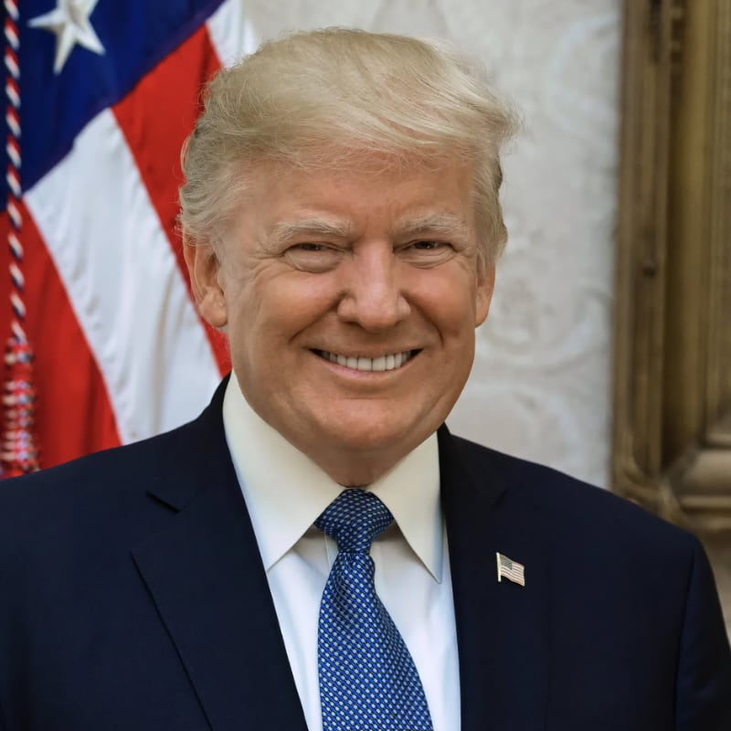
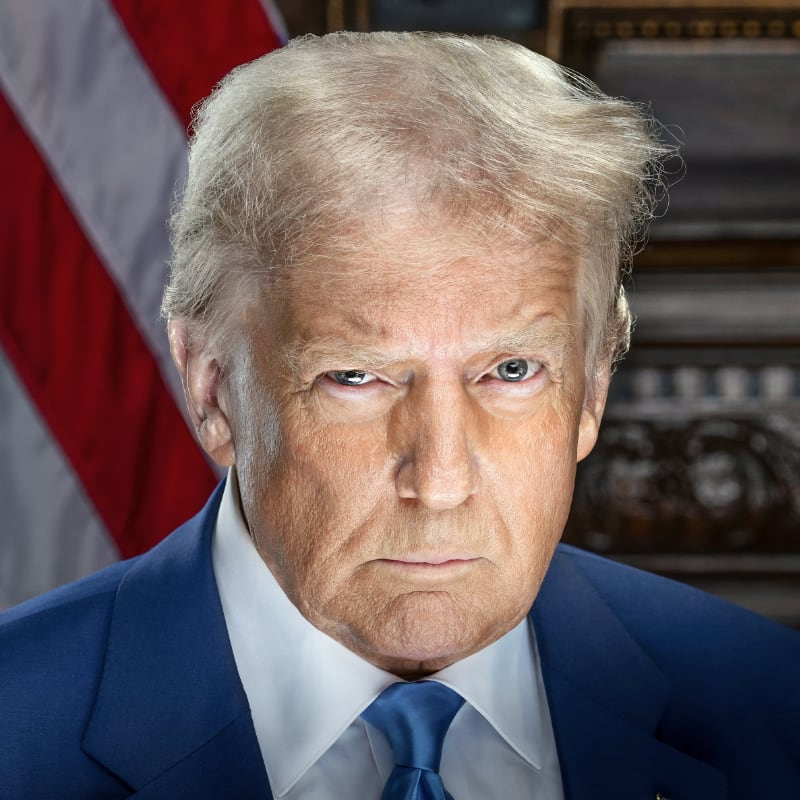

Donald J. Trump, the 45th president of the United States of America

Donald J. Trump, the 47th president of the United States of America
- Neil Gorsuch on the Supreme Court
- Stock Market reached an all-time high
- Consumer confidence at 17-year high
- More than 2 million jobs created
- Mortgage applications to a 7-year high
- Unemployment rate at 17-year low
- Women In Entrepreneurship Act
- Gutted Obama-era regulations
- Ended war on coal
- Weakened Dodd-Frank regulations
- Promoted buying and hiring American
- Investment from major businesses
- Reduced illegal immigration
- Bids for Border Wall underway
- Fighting back against sanctuary cities
- Victims of Immigration Crime Engagement
- Changed R.E, against ISIS
- Drafted plans to defeat ISIS
- Worked to reduce F-35 cost
- 5-year lobbying ban
- Sanctioned Iran over missile program
- Responded to Syria with bombing
- Introduced tax reform plan
- Renegotiating NAFTA
- Withdrew from the TPP
- Exited The Paris Accord
- Created task force to reduce crime
- DOJ targeting MS-13
- Energy independence and economic growth
- Signed E.O. to protect police officers
- Signed E.O. to target drug cartels
- Signed E.O. for religious freedom
- Sending education back to The States
- Fixing the VA
- Trump's temporary travel ban
- The Keystone Pipeline
- Created commission on opioid addiction
- Combating human trafficking
- Rollback of Obama's Cuba policy
- Food Stamp use lowest level in 7 years
- Reduced White House payroll
- Donating Presidential Salary
- E.O. on Obamacare subsidies
- Would not certify the Iran Nuclear Deal
- Successful trip to Asia
- Signed trade deal with China
- Designated North Korea a terrorist state
- ISI lost virtually all of its territory
- Jerusalem as Israel's capital
- Passage of Tax Reform Bill
- Signed 130 bills into law
- Made 136 Presidential Proclamations
- Signed 64 Executive Orders
List assembled by Sean Hannity.